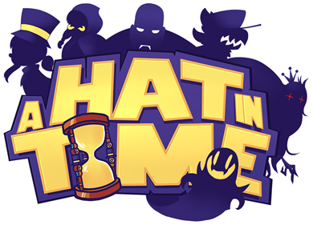

A Hat in Time

A Hat in Time is a 3D collect-a-ton platformer developed by Gears for Breakfast. This is one of the first games on my backlog that I've already played before. The last time I've played this game was back in 2017 when it first launched, and I have fond memories of it! Mainly that it's one of the few 3D platformers I've played that I've enjoyed outside of Mario. Given that it has been years since I've last played this game, it felt like a good time to revisit it and see how well it holds up.
This was also the first game that I streamed the beginning of on my Twitch channel! I wanted to start streaming some of the games that I'm playing, to both show them off to folks, and to capture the first two hours of the game to insert here. That way, along with what I have to say on the webpage, you can also see actual gameplay of these games. I probably won't be doing this for every game, but I want to try for a good amount of them.
Gameplay
I want to start off with where this game really shines, and that's the gameplay. With platformers, how the game feels is by far the most important aspect of the game in my opinion. For if your movement feels off or unenjoyable, then what's the point of playing the game where that's the core aspect of it? A Hat in Time recognizes this and the game feels great to play... most of the time. The overall control of Hat Kid feels a lot like Super Mario Sunshine without FLUDD, it feels polished and has an emphasis on using dives to traverse quickly. The movement options they provide is enough to feel like you can get anywhere, but not too much to be overwhelming to start with.
The levels play with these options well. I'd say it's very much an open-level design, similar to 3D Mario games where multiple Time Pieces are within the same level-space, just obtainable in different zones of the level. They feel like playgrounds while controlling Hat Kid, allowing you to get comfortable with the movement and find collectables scattered around the place. They also introduce Rifts within these levels, which act like linear platforming challenges to test your skills in. These areas also change the gameplay up a bit, while still consistent around being a platformer. It starts out easy with an island town to play around in, but then it transitions to starting in different movie films, or exploring areas within a haunted forest. They all contain platforming aspects, but change the pace by focusing on different aspects (exploration, puzzle-solving, etc.), which keeps things fresh!
Now, I say it feels great to play most of the time. This is at no fault in part of Hat Kid's movement, but more that some of the geometry in required areas feels a bit jank. It's most notably moving platforms, where in certain cases you'll clip through the platform, resulting in having to redo a section, or just get killed. It's frustrating when it happens, but it's not often enough to hinder the game's experience. Just enough to be memorable.
Story & Worldbuilding
The overall story of the game is pretty simple, collect your missing time pieces to fuel your ship to return home. The journey to get home though introduces you to a wide range of characters and settings. While there's only a handful of characters that Hat Kid interacts with, they're all such a joy to interact with due to them having very clear personalities. They all rope Hat Kid into their antics, a lot of which made me laugh out loud. Hat Kid also bounces off their energy, despite her being a mostly silent protagonist. She really fulfils the "kid" in their name, acting all sorts of silly and teasing the other characters, it's funny and cute! The world is also filled with lots of different species that aren't as prominent as the main NPCs, but make the areas you explore feel lived in.
Outside of the character interactions, the rest of the world is experienced by exploring it. There isn't logbooks or lore to uncover, but you can get a feeling for the state of the world by just exploring within it. The background NPCs don't talk much, but a lot of them are in unique situations that help show off their day-to-day lives. This is much more apparent earlier on in the game, but it's still noteworthy that there's effort put into the world outside of the dialog. You can get some backstory of each world through some of the collectables, but it's shown through a storybook. It's a cute way of sticking to the theme of visually showing off the world, but in a snapshot of the past.
Now, just one thing I have to note is that there's a lot of talk about death within the game. Between characters just talking about the afterlife, death in general, or just outright threatening to kill you. Nothing wrong with it, and it does fit the characters that do talk about it, but I just found it jarring how often it came up. Just not something I was expecting from a colorful game about a kid in a hat!
Visuals & Audio
There's not a lot to talk about in terms of visuals. They have definitely have held up over the years, giving off a nice cozy vibe with the vibrate colors that they use throughout the game. I really want to mention the music though, because this soundtrack absolutely slaps. A lot of the environmental tracks are the perfect balance between ambiance to not distract from the gameplay, to being pleasant to listen to outside of the game. The boss tracks go so hard, that I had to pause the fights just to listen to the track. The soundtrack is worth a listen to outside of the game, as the tracks stand on their own. I know I'll be using some as background music for my DnD sessions!
Downloadable Content
I wanted to talk about the DLC for this game separately, as this was my first time experiencing them. There's two DLC packs for the game, each adding one new world to explore. The Seal the Deal DLC adds a short world about going on a cruise, but it also includes Death Wish, which are remixed levels that also provide an additional challenge to complete. The Nyakuza Metro DLC adds a much bigger world, about exploring an open-level metro area.
I'd say both of these DLCs were really fun to explore. I did the Metro first, and it felt like a nice wrap-up world that kind of tests your skills a bit. It also introduced a TON more customization options, which was fun to work towards unlocking! The cruise world was okay, not my favorite but enjoyable to an extent. What I really liked though was Death Wish, as they reminded me of the comet challenges from Super Mario Galaxy. They're re-runs of past levels, but with some sort of twist to make them more difficult. A lot of the twists have been really interesting, while some have just been difficulty spikes. Not sure if I can recommend the entire DLC on just that, but when on sale, is definitely worth it. Made the game feel a bit more complete with some end-game content to really sink the skills into.
Overall Thoughts
This is probably one of the better 3D platformers that you can find out there. The movement feels overall polished and enjoyable to play. The story is simple, but the characters make up for that in their personalities and their interactions with Hat Kid. It was a lot of fun replaying this game too, as even though the base game was all familiar, it was still really fun to play through! If you like the Gamecube/Wii era 3D Mario games, then this is a game that'd be for you, as I'd say it's just as fun and gives the same platforming feel as them.